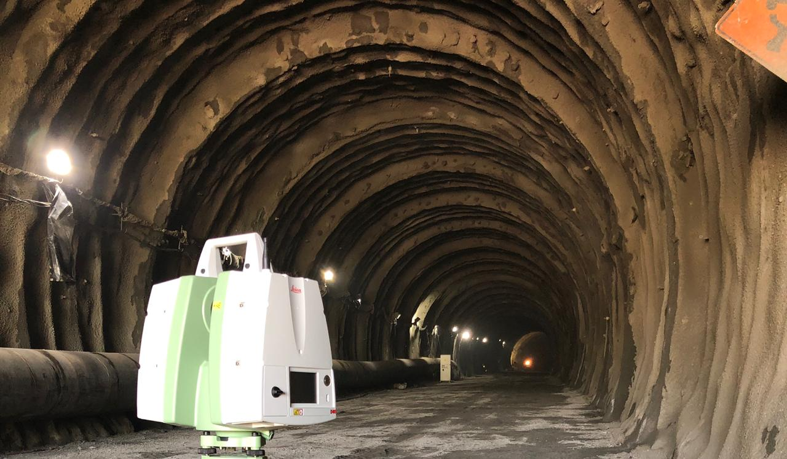

<div class="grid animated fadeIn">
    <figure class="effect-ming">
        
        <figcaption>
            <h2>TÚNEL DEL TOYO CONSORCIO ANTIOQUIA AL MAR</h2>
            <p>Chequeo de red la geodésica local y de poligonales de amarre, levantamiento de secciones transversales, marcación y replanteo de frente, dibujo y calculo de volúmenes, escaneo 3D de túnel.</p>
            <a href="#">View more</a>
        </figcaption>
    </figure>
</div>